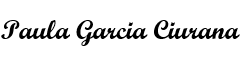

October 9th, 2023
It is with great enthusiasm that I submit my application for the position of Customer Service Representative II. I am confident that my professional background, customer service experience and constant pursuit of the highest standards in everything I do, qualify me as a suitable candidate for this position.
With over ten years of experience in the tourism industry, I have recently moved to Cochrane, and I am eager to use my communication, attention to detail, and time management skills to make a difference in our community. Having worked for non-profit organizations and provincial government for much of my career, I have found my passion in using my skillset to aid in the betterment of communities.
Through my previous positions I have developed strong communication skills by building and maintaining relationships with stakeholders and creating memorable travel experiences, whilst providing exceptional customer service. As a result of my career development across multiple countries, I have shaped my adaptability and cross-cultural sensitivity skills extensively. I am optimistic, prioritize analytical and solution orientated thinking, and have a dedicated sense of ownership to my work. I am a quick learner and find myself motivated through the pursuit of helping others and contributing to a sustainable future, thus I work best when focusing on the collective outcome of the organization rather than personal achievement.
Thank you for your time and consideration in reviewing my application. Based on my skillset and values I believe I could be a successful contributing team member to the Town of Cochrane. I am genuinely excited about the potential employment opportunity and would be available to elaborate on any questions you may have.
Sincerely,
